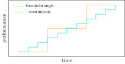

Model
| Aspect | Breakthrough (BPR) | Continuous (TQM, Six Sigma, Lean) |
|---|---|---|
| Duration | short term | long term |
| Pace | big steps | small steps |
| Change | abrupt | incremental |
| Involvement | a few "champions" | everyone |
| Approach | individualistic | collective |
| Stimulus | inventions, new technology | conventional know-how |
| Risks | concentrated | spread over many projects |
| Investment | large investment, small effort | small investment, large effort |
| Focus | technology | people |
| Evaluation | profit | better results in general |
Positioning: BPR = rapid change, emphasis on solutions (what to do); Six Sigma = solutions with more method; Lean = methods, fairly gradual; TQM = methods (how to do it), gradual change.
Business Process Reengineering
Discontinuous change: radically rethink processes rather than improve them bit by bit — a break with the past. Appropriate when: (1) performance is very unsatisfactory; (2) strong market change; (3) disruptive technologies (do not "glue" technology on old processes); (4) mergers, acquisitions, major reorganizations with duplicated processes; (5) crisis/turnaround; (6) obsolete, over-complex processes (too many approvals, red tape). Elements: fundamental change, end-to-end processes, customer centricity.
Total Quality Management
Deming and Juran move quality from downstream inspection to a responsibility of the whole organization. Elements: customer relationships, include all people, improvement cycles (PDCA), systems and procedures, education. Jidoka: "automation with a human touch" (autonomation).
| Aspect | TQM | Lean |
|---|---|---|
| Goal | total quality, zero | eliminate waste (muda) |
| defects | ||
| Focus | product/service quality | process flow, customer value |
| Approach | cultural, managerial | operational, practical |
| Origin | USA (Deming, Juran) | Japan (Toyota) |
| Tools | PDCA, quality audits, | value-stream mapping, Kanban, 5S |
| standards | ||
| Problems | errors, defects | waiting, waste, inefficiency |
Example
A bank merging two IT systems with duplicated account-opening processes → BPR (redesign one process from zero). A factory with a stable process and 2% scrap → continuous improvement with teams (kaizen, Six Sigma projects).
Pitfall
BPR is not "cutting staff"; continuous improvement is not "no investment". They can be combined: a radical redesign followed by continuous improvement.
Recall
Fill the ten-row comparison; give the six situations for BPR; contrast TQM and Lean.
Picture

Big steps with flat periods vs many small, steady steps.